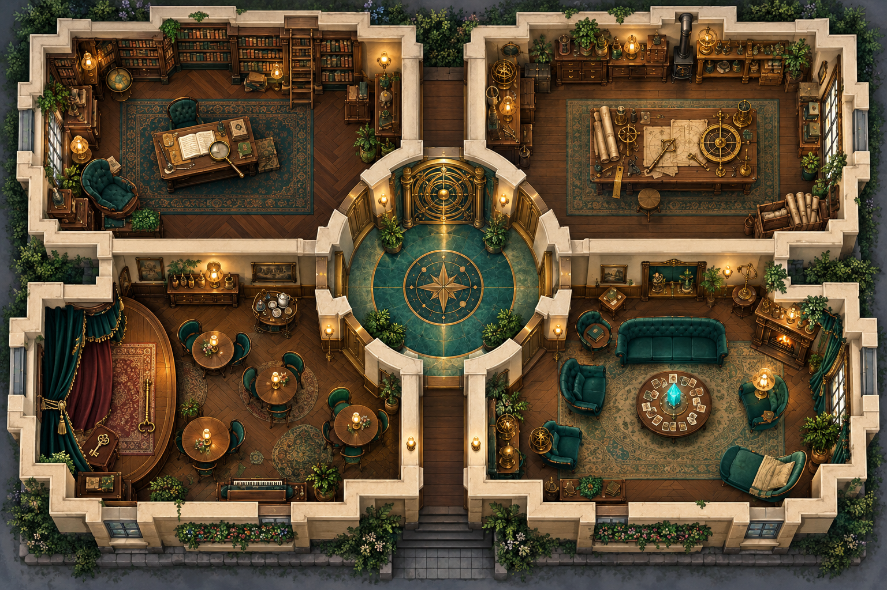
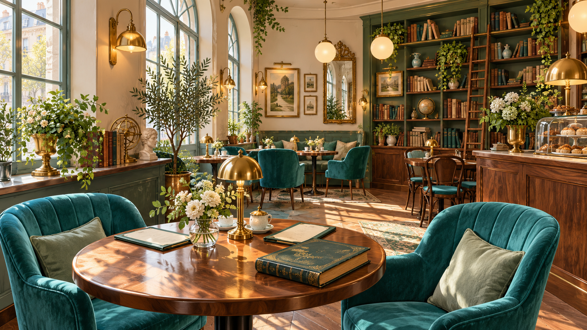
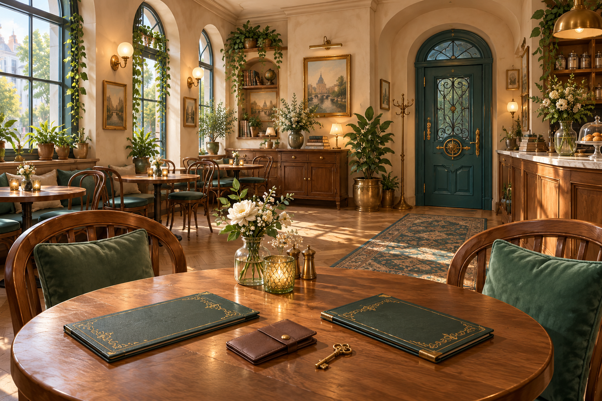

SOZIALWISSENSCHAFTEN EFEin Café.
Ein Café.
Vier Räume.
Dein Blick auf die Regeln.
Untersuche die Erwartungen auf Buchseite 176. Sammle Werkzeuge, entdecke Bildspuren und öffne mit euren Erkenntnissen die Ausgangstür.
Erst zweimal lesen, dann spielen. Im Archiv ruft ihr eure Erinnerung ab.
Offline spielbar · ohne Anmeldung · kein Zeitlimit

Dein Weg durchs Café
Wähle das Archiv auf der Karte, um einzutreten.


Die Tür ist offen.
Ihr habt die Café-Regeln untersucht und begründet hinterfragt.